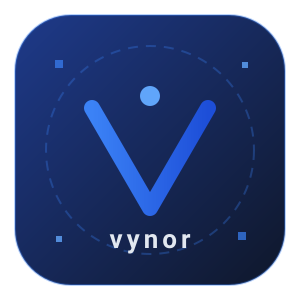

Artificial Intelligence & Vision
Real-time object detection, tracking and classification optimized for embedded and edge devices.
AI, Control Systems & Industrial Project Coordination
Engineer focused on building intelligent machines that see, decide, and act. "I design and deploy real-time computer-vision and AI inference pipelines at the edge and integrate them with embedded control loops on microcontrollers. I do not personally program PLCs or design SCADA/industrial networks — for those I coordinate with trusted specialist partners, and I manage the project side: scoping, scheduling, and coordinating teams end-to-end.

Core competencies across AI, control, and industrial automation.
Real-time object detection, tracking and classification optimized for embedded and edge devices.
Deterministic control loops, servo/stepper actuation and robust firmware on STM32, AVR and ESP platforms.
I don't do PLC programming, SCADA/HMI design or industrial networking myself — I work with a trusted network of specialists who do. My role is project management and coordination: scoping work, aligning teams, and integrating edge-AI nodes with existing production lines.
From schematic to working prototype: custom boards, power stages and reliable communication buses.
A few systems I've designed and shipped.
Editable timeline — update roles and milestones as your career grows.
Designing and delivering edge-AI and smart automation solutions for industrial clients: vision systems, control firmware, and custom hardware.
Developed real-time control loops, motor-drive firmware, and sensor fusion modules for automated machinery.
Built machine-vision inspection prototypes and plant-floor monitoring tools; managed projects by coordinating PLC, SCADA and networking work with specialist partners rather than doing it myself.